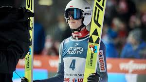

Paweł Wąsek debiutował w FIS Cup w Szczyrku w 2014 roku we wrześniu, ale punkty zdobył w 2 lata później w Einsiedeln (2 pozycja). Przeszedł do CoC i też zdobył punkty. Na MŚ juniorów w Salt Lake City zajął 7. miejsce. W Pucharze Świata zadebiutował w Zakopanem w 2018 roku, a rok później zdobył swoje pierwsze punkty na Wielkiej Krokwi. W sezonie 2016/17 wygrał cykl FIS Cup.
» Debiut w reprezentacji: 2014 » Debiut w Pucharze Świata: Zakopane 2018 » Pierwsze punkty w Pucharze Świata: Zakopane 2019

» 2017 - 1 miejsce w FIS Cup » 2017 - 7 miejsce na MŚJ w Salt Lake City